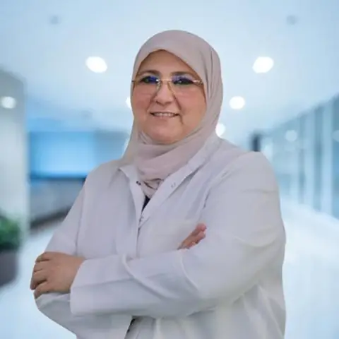

Dr. Afnan Mashal · Silwadi Dental Center, Abu Dhabi
Doctor profile
Dr. Afnan Mashal
General Dentist
Dr. Afnan Mashal is a general dentist whose current public centre profile records more than 35 years of dental experience and interests across restorative and aesthetic care.
SpecialtyGeneral Dentist
Clinical baseBani Yas Tower, Abu Dhabi
CentreDr. Munir Silwadi Dental Centre
Clinical focus
General dentistryPrevention, diagnosis and general restorative treatment.
CAD/CAMHer public profile notes experience with CAD/CAM dental workflows.
Aesthetic dentistrySmile makeovers, reshaping and anterior restorative work are listed among her interests.
Complex restorative careHer profile also references full-mouth rehabilitation and dental prostheses.
Profile notes
The centre’s public profile records more than 35 years of experience and a broad GP scope including endodontic and prosthetic restorative care.
35 years+ experienceCAD/CAMFull-mouth rehabilitation